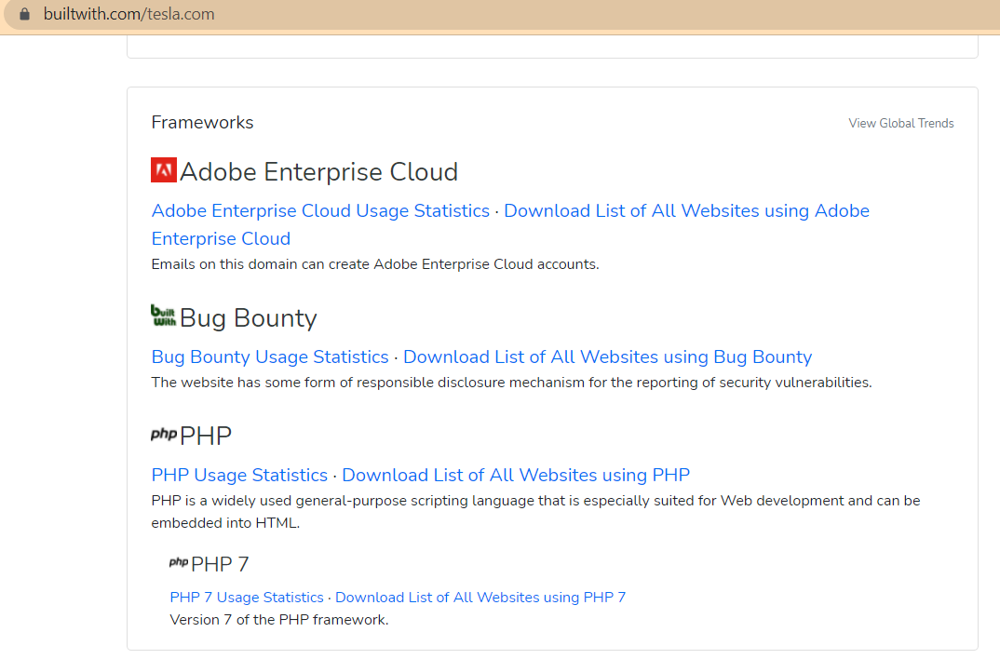
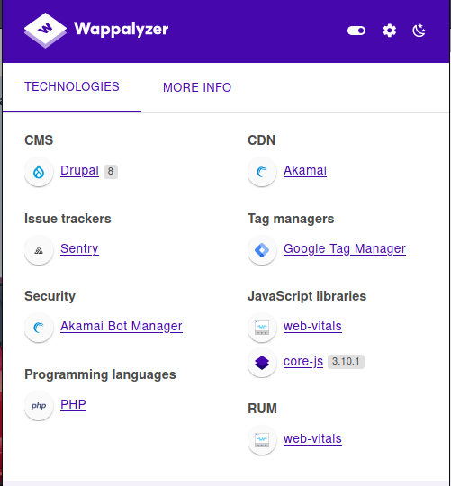
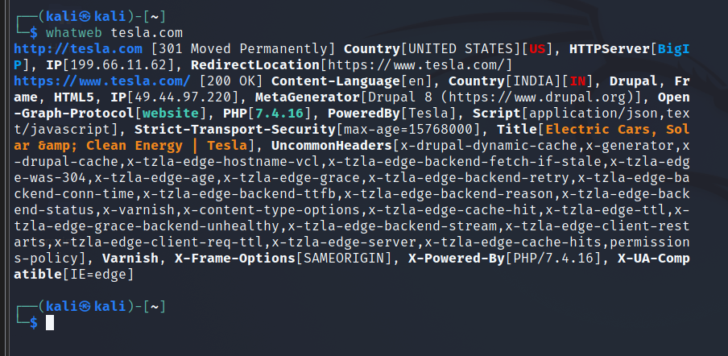

- Now we will look at what a website is build with.
- So for that we will use a tool called builtwith.https://builtwith.com/
- It shows us all the stuff from what tech , widgets it runs or what kind of framework it runs.

- Now there is another tools called wappalyzer firefox (i.e. extension https://addons.mozilla.org/en-US/firefox/addon/wappalyzer/)
- Wappalyzer is a more of an activetype of a reconnaissence.
- But we don't believe it because we are not scanning anything here.
- We are just going to the website as a normal user would so for us it's still passive as we are not doing anything out of the Norm.

Now why it is important ? What is the need of identifying the tech ?
-It's important because if we know it's running php or drupal there could be a vulnerability between those.
There is one more tool which is a builtin tool called whatweb
And the syntax iswhatweb tesla.com
- It did pulled up anip address and php version as well as drupal version.

- So using more tools to our advantage gives us more infromation.